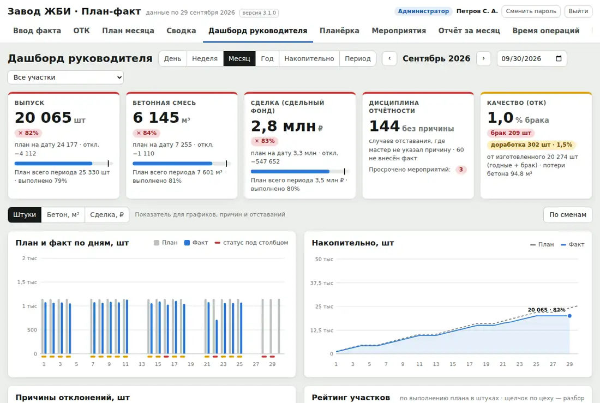
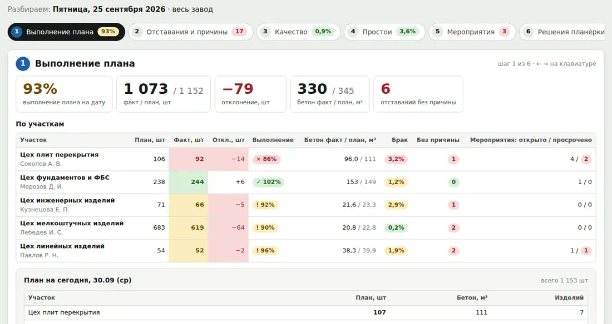
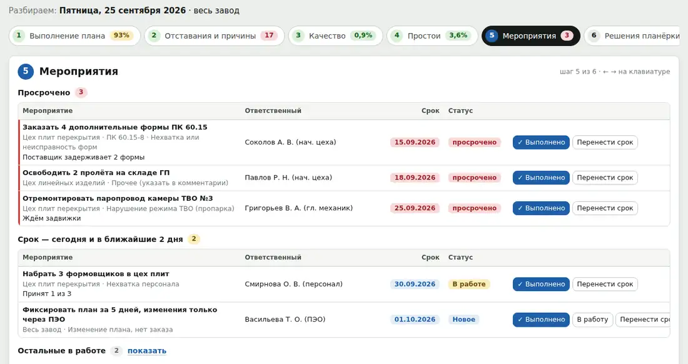
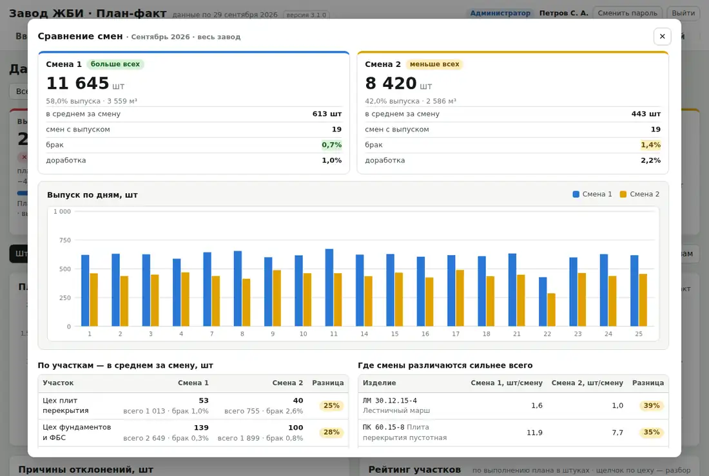
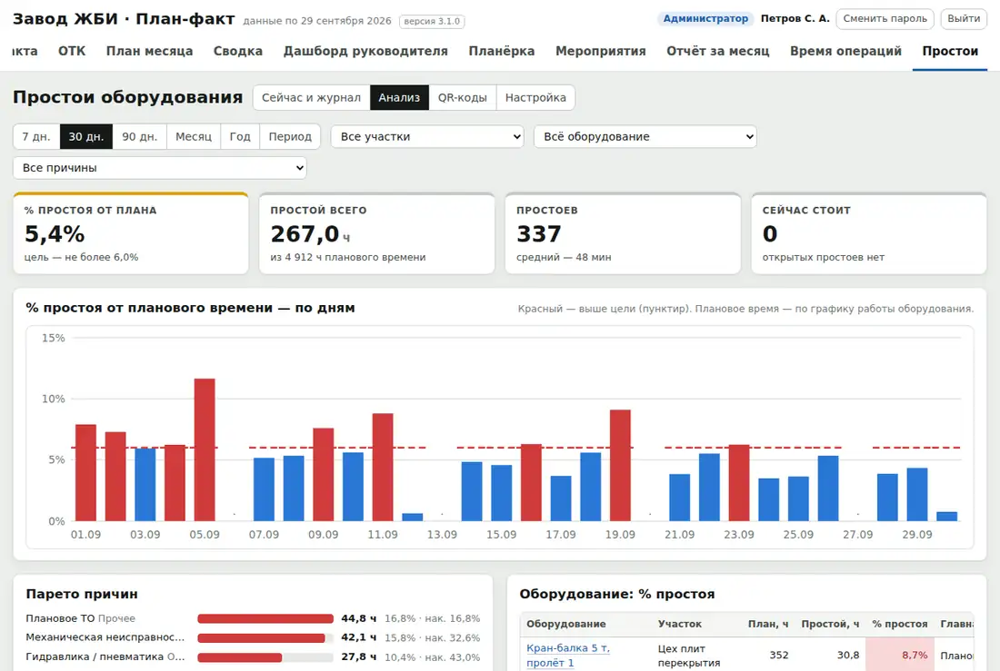
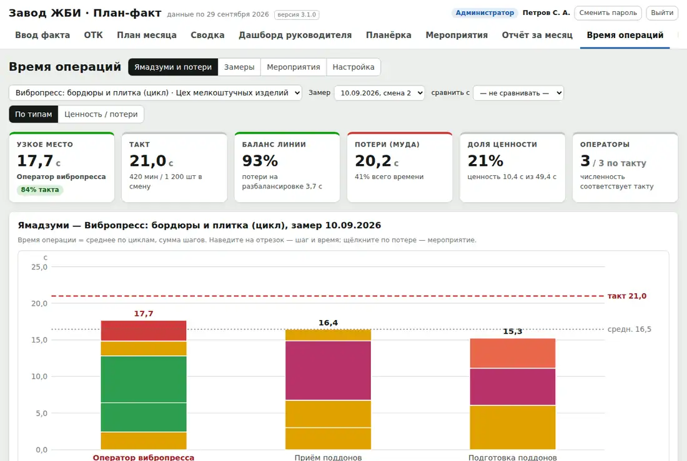

Система оперативного управления заводом железобетонных изделий: от сменного задания мастера до решения планёрки и его исполнения.
Версия 3.1 · Windows и Mac · работает в сети завода без интернета · листать — колесом, стрелками или пробелом
Факт узнают на следующий день. Мастер пишет в журнал или свой Excel, кто-то сводит — отставание видно, когда его уже не догнать.
Причины отставаний теряются. «Не было бетона», «форма в ремонте» — остаётся в разговоре, а не в цифрах.
Планёрка — это разговор. Решения не записаны, ответственные и сроки размыты, через неделю никто не помнит, что обещали.
Брак и простои считают отдельно. ОТК в своей тетради, простои — «на глаз», и связать их с недовыпуском нельзя.
План правят задним числом. Нет утверждения и истории изменений, поэтому план всегда «выполнен».
У каждого своя версия правды. Таблицы расходятся, на совещании спорят о цифрах, а не о решениях.
План месяца распределяется по дням с учётом загрузки форм и утверждается. Дальше менять — только с причиной.
Факт мастер вносит по сменам, ОТК — брак и доработку. Процент выполнения считается к плану на дату.
Отклонения подсвечиваются сразу; без указанной причины они остаются в «дисциплине отчётности».
Планёрка идёт по шагам на одном экране: план, отставания, качество, простои, мероприятия.
Решения вводятся как «что — кто — срок» и сразу становятся мероприятиями, которые проверяются на следующей планёрке.
| Должность | Что делает в программе | Что видит |
|---|---|---|
| Мастер участка | Факт годных по сменам, причины отставаний, комментарии; ведёт свои мероприятия; печатает сменное задание | Свой участок |
| Контролёр ОТК | Брак и доработку по видам дефектов; выдаёт паспорта качества партий | Качество по своему участку |
| Технический отдел | Замеры времени операций, процессы, справочники оборудования и изделий | По выданным правам |
| Руководитель | План месяца и его утверждение, планёрка, решения, отчёт за месяц | Весь завод, дашборд |
| Администратор | Пользователи, права по разделам, скрытие вкладок, корзина, точки восстановления, лицензия | Всё |
| Просмотр | Ничего не меняет | Разрешённые разделы |
Права гибкие: для каждой должности и каждого раздела — «нет / просмотр / изменение», плюс личные права сотрудника. Закрытый раздел не просто спрятан — сервер не отдаёт его данные.
Печатает сменное задание на день: что и сколько делать по его участку.
Встала линия — сканирует QR-код на оборудовании телефоном, выбирает причину, запускает таймер простоя.
Мастер вносит годные и причину, если не догнали план. ОТК вносит брак и доработку.
На проекторе — итоги вчера по участкам, отставания, брак, простои, просроченные мероприятия. Решения — сразу с ответственным и сроком.
Открывает дашборд с телефона: выпуск, бетон, сделка, качество, где теряем больше всего.
Цель месяца по каждому изделию раскладывается по рабочим дням одной кнопкой. Можно вставить блок прямо из Excel, копировать неделю, перенести план дня.
Справочник форм (количество × оборотов в сутки) и штук за оборот у изделия. Перегруз формы на конкретный день видно красным ещё при планировании.
После утверждения любое изменение — только с причиной и попадает в журнал. Прошедшие дни заморожены на сервере. В отчёте месяца видно, сколько раз и насколько менялся план.
Изделия загружаются из вашего файла: столбцы распознаются по заголовкам, перед загрузкой — предпросмотр «новое / изменится / ошибка».
Объём бетона и расценка фиксируются в плане месяца, поэтому смена номенклатуры не переписывает прошлые месяцы.
Данные хранятся по дням, поэтому неделя на стыке месяцев, «накопительно» и «с начала года» считаются сами.






Шесть должностей, права по каждому разделу, участок ограничивает мастера и ОТК. Каждая ячейка помнит, кто и когда её изменил.
Входы, изменения плана, справочников, мероприятий и пользователей записываются. Прошлое не переписывается молча.
Удалённые мероприятия, записи простоев, замеры и пользователи восстанавливаются администратором.
Ежедневная копия базы, точки восстановления по кнопке, возврат с сохранением текущего состояния.
Сервер — компьютер в сети завода. Интернет не нужен, данные никуда не уходят. Мастера заходят с ПК или телефона через браузер.
Программа сама сообщает о новой версии и показывает, что изменилось. Перед каждым выпуском — 238 автоматических проверок.
План месяца, факт по сменам, причины, сводка, дашборд, планёрка, мероприятия, отчёт за месяц.
Брак и доработка, виды дефектов, Парето, паспорта качества по ГОСТ 13015.
QR-коды на оборудовании, журнал, анализ, цели по простоям.
Хронометраж, Ямадзуми, потери, мероприятия с подтверждённым эффектом.
Модуль включается файлом лицензии без переустановки. Ненужные вкладки администратор скрывает, данные при этом сохраняются.
Установщик для Windows или архив для Mac на компьютер, который постоянно включён в сети завода. Сервер запускается сам.
Номенклатура из Excel, участки, формы, причины, оборудование. Пользователи с логинами и временными паролями.
План месяца, ежедневный факт мастерами, ОТК, QR-коды на оборудование. Планёрка по программе.
Отчёт за месяц: выполнение, причины, брак, простои, исполнение решений. Решение о дальнейшей работе.
Программа ставится с примерными данными завода ЖБИ, чтобы сразу было видно, как всё работает.
С сопровождением: настройка под ваши участки и изделия, обучение мастеров и ОТК.
Нет. Программа работает в локальной сети завода. Интернет нужен только чтобы узнать о новой версии — и это можно выключить.
В одном файле базы на вашем компьютере-сервере. Ежедневные копии хранятся 30 дней.
Только браузер на рабочем компьютере или телефоне в сети завода. Ничего устанавливать не нужно.
Обычный компьютер на Windows или Mac, который постоянно включён. Отдельный сервер не обязателен.
Номенклатура загружается из Excel с предпросмотром; план вставляется из Excel блоком; журнал простоев — из Google-таблицы.
План-факт ведёт оперативный учёт смены, 1С — бухгалтерский. Выгрузка в 1С — в планах развития.
План-факт ЖБИ делает оперативное управление заводом прозрачным: каждый вносит свою часть, отклонения видны сразу, решения исполняются.
Демонстрация на примерных данных — 30 минут онлайн или на заводе.
Пробный период 7 дней или пилот на 30 дней на вашем заводе.
Напишите или позвоните — покажем программу на ваших изделиях.